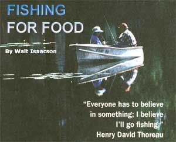
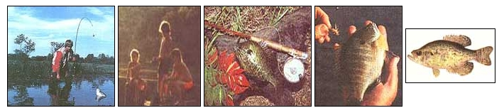
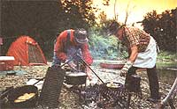
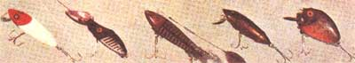

Fishing For Food
August/September 1995
BACK COUNTRY SKILLS
Have you checked prices at the fish market lately? Fresh-caught swordfish, halibut, salmon, and shrimp of significant size cost the better part of 10 bucks a pound. Even once-dirt-cheap ocean whitefish such as fillets of cod or haddock go for double the price of red meat, and several times the cost of poultry. And by all reports, prices will continue to rise. Deep-sea fish stocks around the world have been decimated by over-harvest, weather changes, and pollution. And, belatedly-but better late than never-the U.S. and Canadian government regulators are reducing the catch further by closing major fishSing grounds so the huge factory ships with their otter trawls, drift nets, electronic fish locators, and on-board flash-freezers don't gobble up the last of the breeding stocks and make Atlantic cod and Pacific salmon truly endangered species.
However, there is a wild fish resource that's both self-renewing and so abundant that the lack of exploitation can be a problem. It is also free for the taking and easy for anyone to catch.
I don't mean "Government Fish": hatchery-raised rainbows, togue, or lake trout, nor do I mean lunker black bass, landlocked salmon, or walleyes, tacklebustin' Northern pike, or muskies. These are all properly deemed gamefish-a public natural resource that, like ducks, deer, and other wildlife-is husbanded by sportsmen's groups such as Ducks Unlimited and B.A.S.S., and managed by relatively beneficent government agencies for the benefit of recreational sportsmen ...who willingly underwrite their friendly Fish & Game wardens, hatcheries, and stocking programs through license fees, stamps, and taxes on bait and tackle.
I refer to the abundant, easy to catch panfish that are seldom sought for sport, but are left to kids with cane poles and bent pins ...if they're fished for at all. An intermediate link in the freshwater food chain, these mostly foot-long-or-under species feed on bugs and minnows and in turn are eaten by bigger game fish, raccoons, fish eagles ...and by you and me. Indeed, they got the name "panfish" because they fit so well into a hot frying pan.
First come the bottom-dwelling catfish that can be caught in any water: both the big blue channel cat (that prefer faster moving rivers and clear lakes and can grow to almost four feet and 60 pounds in big water) and ordinary mudcats found in more sluggish waterways, and often called bullhead, madtom, horned pout, yellerbelly, of whiskers, and other regional names of gustatory affection. They all shuck out of their skins into succulent fish sticks that demand to be blackened with Cajun spices, or pan fried and served up with hush puppies and Cole slaw Tom Sawyer-style. Then there are the free-swimming schools of white and yellow bass and crappie that are best caught in open water from boats.
For shore fishing, the continent hosts more than 30 species of brightly colored, slab-sided sunfish variously called rock bass, cracker, pun'kinseed, bluegill, sunny, red-ear, or green-ear. All of 'em are called bream (pronounced brem) in the South. One or another can be found in preternatural abundance along rocky shores, under docks, overhanging trees, and undercut sod banks. . . and lurking at the edges of shallow weed beds, under snags, and along drop-offs in practically every lake, pond, deep puddle, river, stream, creek, bayou, branch, ditch, slough, swamp, marsh, bog, and backwater of the land.
And then there's the best-eating of all: the buttery-flavored yellow perch, a midsized member of a family of long-bodied fish that includes walleyes and the infamous snail darter. Remember that three-inch-long stream minnow that became a hero of early environmentalism? Always thinly distributed, it was problematically branded an endangered species, and fostered a lawsuit that caught public attention and halted construction of a TVA dam back in '77. Subsequent research found that creeks in valleys all around teemed with snail darters, and they weren't endangered at all-but by then the media had lost interest and Congress had quietly exempted that particular chunk of pork barrel spending from the Endangered Species Act.
Preliminaries
On the inland waters of every state and province, any angler over age 16 or so must carry a fishing license ...or be liable to a fine and confiscation of catch and tackle by a game warden or local constable. Resident licenses don't cost much, so take your driver's license or other proof of residence to the courthouse or a tackle shop and get a license.
Some jurisdictions require you to display the license conspicuously while fishing so 01' Smokey doesn't have to get off his/her duff to check licenses. Wearing the license as a kind of grown-up Boy Scout badge, many hunters and fishermen get a day-glo orange plastic carrier and display it on the back of their hats all season long.
Kids don't need licenses, and you can save the fee by taking along a batch of youngsters on every trip. Tell the Smokey Bears that you're just there to bait hooks and lug the huge stringer of fish. lust be sure there's only one fishing pole per kid and no extras.
With the license, you should get a brochure of fishing regulations. Read and follow them. Get a fish-identifying manual too if you can't tell a coho salmon from a horsehead sucker. Panfish are so hardy and prolific that there are no longer any seasonal size or catch limits in most places. But, if you load up the stringer with eight-inch hatchery trout when the limit is 12 inches and two per day, your claim that you thought they were yellow perch won't wash with Fish & Game.
If you are unfamiliar with local waters, get a fishing map too. Every tackle or bait store and many service stations and hardware stores carry them. A map will identify restricted areas so you won't get caught fishing with worms in a dry-fly-only, catch & release trout stream. On the positive side, it will locate all the legally fishable streams, ponds, and impoundments, and indicate whether they are cold-water bodies containing a relatively few trout or warm-water that hosts the abundant bass/bluegill/catfish populations you are after.
Release The Big Ones
Releasing all large-but-not-trophy-sized game fish is becoming a ritual among knowledgeable anglers. It makes for better sport in the long run, as fish are too dumb to remember being caught; and if released unharmed but for a hook prick in their bony jaw, they can thrill several sportsmen a season for many years. The big fish are the better spawners too ...though, any fish that swallows a hook or otherwise appears to be injured should be kept if it is legal. (You can't be penalized for catching out-of-season or too-small fish just for keeping them.) However, keeping every panfish you catch no matter when caught or how small is actually recommended by many authorities. The more small fry removed from a water body, the more space is available to let the survivors grow larger. (In other words, runty fish are more often the result of too many fish in the pond due to too few predators and too little fishing, rather than overfishing.) The rule-of-possession for any fisherman is to keep no more than you plan to eat. But, as we'll see below, with a production-line cleaning operation and modern flashfreezing techniques, you can put by as many panfish as you can harvest.
Equipment
You can spend a small fortune on fishing gear, and many high-end recreational anglers do. What with a $2,500 split-bamboo flyrod, a wallet of hand-tied flies, licenses, and stream-fees and a wardrobe of L.L. Bean duds, an eastern brook trout can cost more per pound than a Ferrari.
Of course, the objective of sport fishing is not food. When it is, your gear requirements are minimal.
Poles
There is much to be said for the traditional "barefoot boy with cheek..."style cane pole. Every spring you see sheaves of them-some 12 to 16 feet long poking out of a trash bin at the back of hardware stores and (for double the price) at bait shops in fishing country. A long cane pole can reach well into a pond and most of the way across many a fiat land river. One problem is hauling those 16foot poles in today's 12-foot vehicles. For this use, they make cane poles that break into sections that attach with ferrules-brass plug-and-sleeve joints. A jointed genuine bamboo pole, complete with a hank of line, a bobber, and hook, costs less than $6.
It takes no skill and little effort to drown worms with a cane pole. It is passive fishing, and a good excuse to escape whatever you need to get away from on a hot summer afternoon when the fish aren't biting anyway. There are more reasons than sport or supper to go fishing.
If you are experienced with casting reels, fiyrods, or bail-equipped spinning rigs, use them. But for kids and novices, the "spincasting" rig is best. Like a spinning reel, the line is wound around a fixed spindle by a revolving bail and when cast out, the line just loops off with little resistance. The whole thing is enclosed, so snags are harder to get. To cast with a spinning rod you must hold and release the line with your forefinger. This takes practice. So does a bait-caster that has a revolving reel that can over-spin the line being cast out, producing the famous backlash. In fly fishing you use a weighted line to cast a tiny fly for great distances-also snag-prone in any nearby brush, and requiring years of experience.
Bait shops are fun, but you'll save a good half by shopping in the fishing department of any mall discounter. A lightweight, good-quality spin-casting rig-rod, reel and line-can be had for about $25. I use a lightweight telescoping rod with an underslung lever-acting spin-casting reel that cost less than $30 and that works marvelously. Even the littlest kid will need his/her own rig, and surprisingly well-made spin-casting rigs sell for about $10. Some Japanese spinning reels come with a lot of bells and whistles and cost plenty. For my money, the best spinning reel made is the original French designed Mitchell at under $35, and to this day, I can't tell a discount store's carbon fiber rod from a sporting goods store's best at 10 times the price.
The one improvement over the low-priced package rod/reel combos that I recommend is line. They come standard with six-pound-test monofilament that is liable to be set into loops on the reel and snarl easily. Better is to peel off and discard the top 30 feet of mono and replace it with one of the new braided lines such as Spider Wire. Super-strong, super-thin and lightweight-but "limp," unlike mono it won't snarl or break unless you really try. Panfish can't break it, so the kids can just horse them out of the water.
Natural Baits
Worms are a traditional fish bait and easy to catch. Six-inch-long pink nightcrawlers burrow around, aerating, tilling, and enriching the soil in every lawn and garden. They emerge at night to deposit castings-digested soil-above ground. They are so helpful in enriching your soil that you wouldn't want to catch them all if you could. You can't ...but to lure a few out, water the soil in the afternoon. Well after dark, put on soft shoes and take a flashlight and coffee can containing a little moist soil out to the yard. Walk softly. When you see a crawler half out of its hole, approach slowly and silently, placing each foot deliberately without thumping the ground. Grab quick, hold firmly, and pull gently till it lets go ...or you'll break it in half.
Red (manure) worms are smaller, much more wiggly and brittle than crawlers, so they're hard to put on a hook. But, they are well suited to panfish. You'll find them day or night at the soil-line beneath old manure piles or compost heaps. An even better source is a year-old pile of newspapers or (uncomposted) leaves or grass clippings. You'll often find the bottom few inches of leaves or clippings or the lower newspaper sheets layered like a book, with red worms between each layer. Pick out the larger ones and leave the small ones to grow up.
If you raise rabbits or poultry in cages, release a few red worms in the dropping pile. Scatter leaves, grass clippings, or garden scraps under the cages from time to time, mix to aerate, and keep uniformly moist but not wet, and shortly you'll have a worm farm.
For some reason, medium-sized pink worms really like to hang out under fiat rocks. I collect thin, fiat rocks and use them for paths and a semi-permanent mulch in and around the garden. Flipping one over, any time of day or night, will show where worms have dug their burrows up to the flat surface ...so the top of the burrow is open once the rock is removed. And, there are always one or more worms there. I can harvest each flat rock several times a year. Short lengths of board collect worms just as well, and sheets of black plastic mulch work too, as well as bales of old hay.
You can buy red worms by mail, but they don't all travel well. Alabama worms aren't acclimated to Minnesota winters, and vice versa. It has something to do with the depth they dig down for winter. I recommend harvesting local stock from under flat rocks if you want to build up a good worm herd.
To keep worms alive and squirming, punch tiny air holes through bottoms and around sides of a coffee can and fill with forest loam, compost, or peat moss. Keep cool, covered (worms will all crawl out at night if you don't), and moist but not wet. Scatter cornmeal on top every few days and worms will live happily between fishing trips. Incidentally, you will lose more worms but catch more fish if you hook them just once through the middle and let them wiggle in the water.
Pork rind is a bait made when a hook is stuck through the front end of a fork-tailed ribbon cut from the skin left from a chunk of salt pork, fatback, or chunk bacon. Fish are presumably attracted to the flapping of the rind through the water, its meaty flavor, and the salt in it. A good pork rind will last all day. But unless you raise your own hogs, it's hard to find genuine pigskin these days, when meat all comes trimmed, precut, and sealed in plastic.
You can buy pork rinds in bottles. I make my own approximation from the skins removed from fish. Catfish hide is toughest, though flatfish skin will do. I split the tubular catfish skins, trim fins and heads off all skins, and lay them flat in a wood-slat box between layers of rock salt. After a few weeks they shrink and toughen. Moistening them if they've gotten brittle, I trim them into strips-two to three inches long and a half-inch to an inch wide and cut forks into some, divide the ends of others into four or five strips or leave them intact, depending on shape of the skin. They will keep forever and regain plasticity if stored (in a cool place, out of the sun) in loosely covered jars containing saturated salt solution (dissolve as much salt as the water will accept). I add red and green food coloring to the water to make the strips look less like dead fish skins. I'm convinced that this helps attract panfish.
You can also buy a modern approximation of old-time dough bait ...a kind of gumdrop-shaped blob ...dyed in dayglo colors ...imbued with the artificial odor and flavor of cheese, beef blood, or fish ...and packed in plastic bags. I make my own by adding a little salt and enough water to a cup or two of flour to make a stiff dough. If it's available, I dose the water with meat blood, ripe cheese, crushed garlic, a bouillon cube, or any other aromatic edible that comes to hand. Then (just as when making bread-flouring my hands to keep the dough from sticking) I knead it until it is stiff and plastic with an oily sheen on the outside. (This is more kneading than bread wants-dough overworked like this would bake into a rock.) Then I roll it out into half-inch-thick sausage-rolls, cut it into half-inch lengths, and roll these into dough balls. I flour them well to keep them "unstuck together," and freeze till the next fishing trip. Its best to use 'em all. Left in a cupboard, refrigerator-or tackle box dough balls are easily forgotten and will sprout a variety of colorful molds that attract neither fish nor fishermen.
Artificial Lures
I have two gigantic tackle boxes holding two spinning rod and reel combination, several tiny black-gnat dry flies, a half dozen spinning lures, and assorted hooks, sinkers, leaders, and floats-which is all the gear that I really use. The rest, perhaps 30 pounds (at $4 per half ounce lure), is proof if you need it that fishing tackle is intended more to attract fishermen than fish.
To go panfishing from shore, each fisherperson needs: only a spin-casting rod and reel with 30 feet of good line and 100 yards of backup in case Moby Dick bites; one each #2 and #4 snelled bait-holder hooks (with a loop-ended length of clear monofilament attached and barbs on the shank as well as the tip of the hook); splitshot weights; a medium-sized bobber/casting float; a yard-long length of leader with a black-gnat fly at one end and a loop at the other ...and bait. Take along a live fish basket and a good-sized landing net with a long handle, some bug dope, suntan cream, and a peanut butter and jelly sandwich lunch.
As indicated elsewhere, go where the fish are when they are most likely to be biting. Cut off the end foot of line and tie a loop by doubling over the end and making a granny knot. Put the loop in the line through the looped end of the snelled hook, pass the bait and snell through the loop in the line, pull tight, and you have an unbreakable, but easily released, square knot. Bait hook, put on one or two split shot just above loops and a float about a foot higher, and sling it out where the fish are dimpling the water. If baits don't work, affix the leader and fly to the end of the line. Put a casting float about two feet from the fly and use it to get the fly out to the fish. If panfish don't take black gnats, they aren't eating anything.
Strike back-jerk lightly to set the hook when the bobber goes under. If you don't catch a fish by jerking at the first little bob, wait till the second ...then the third ...then wait till you get a real strong bob ...then two. Finally, wait till the fish pulls the bait off a way and stops. When the bobber starts to move again, strike hard and be ready for fun because you've caught a black bass and it may be a lunker. Keep the rod tip up, the line tight, and let the fish run against the drag to tire it out. Crank in, let it run, crank in, and so on till you or a helper can net it.
Grasp a really big fish tight by the lower jaw or behind the gills, remove the hook with pliers, and let it go if you can bear to. If your eight-year-old hooked it and has to show it to his friends, big fish make good eating too. A whole, gutted bass is perfectly wholesome after several days in the refrigerator (including repeated, if brief, show-and-tells) or for a month in a water bath in the freezer.
You may have to adjust height of bait off the bottom by moving the float on the line. You may have to change baits. You may have to change fishing spots, fishing water, fishing times. But you will catch fish nearly every time out. Once in a while you will fill the stringer twice over.
Where to Look
Don't fish were you'd most like to swimdeep, cold lakes and fast-moving streams with sparkling clear water, clean sandy bottoms-and few, hard-to-locate, even harder-to-catch roving (pelagic) fish. Look for panfish water: warm, shallow, slow moving with a mud,bottom and murky, green water that supports a lush growth of lily pads and pond weeds, that teems with turtles and newts and hums and buzzes and hops and pops on hot days with creepers and crawlers. Muddy water is tine for catfish that grope the bottom with barbels on their mouths, but the best fishin' water for slab-sided fish is dark and clear but rich with the algae that feed the small fry that feed your quarry.
Ponds and coves and backwaters in lakes can be your best panfish source, especially if they are a good hike from any road. Casual fishermen tend to wet a line in water they can see from the car, and sport fishermen go for big water or fastmoving streams. Farm ponds are good (but get permission). But, be sure that any fishing water in farm country is clean of agricultural chemicals. Any dangerously poisoned water will be posted by the EPA or local environmental agency, but I don't fish in proximity to any commercial farmland. A topo map will show you if a pond is downhill (and downstream) of farm fields or large stock lots.
Look for wide stretches of slow water in rivers-especially the inside of wide bends where the flow slows to deposit silt so pond weed and reeds can grow to offer fish some cover. If your river runs through a small town, fish upriver or no less than a mile downstream. If it runs through an industrial city, don't fish downstream at all. I needn't remind you that, as predators well up in the food chain, panfish can accumulate chemical pollutants in their fatty tissues. We've come a long way since every sewer and factory dumped raw waste into the nearest water body. But pollutants have sunk deep into the bottom sediments under many water bodies and fish can be contaminated for decades after direct pollution has been stopped. Truly dangerous waters will be posted along popular swimming and fishing beaches (but not at every country road-crossing). Look for signs nailed to trees along the waterway.
When To Go
If there is a single rule to successful panfishing, it is to go when the fish tend to be feeding most actively. Seasonally, early spring is best-as fish are emerging from winter's lethargy and fueling up for the breeding season. But in much of the country, that's when bugs are biting, weather is raw, and country roads muddy. Next best is the fall, when the fish are fattening up for winter. Weather is glorious, with no bugs, good roads, and when chilly mornings offer a welcome break from the past summer's heat.
Weather systems influence fish behavior as much as our own. They are less cooperative in low pressure, and a gray or rainy day. Steamy hot days warm the shallows, so they go deep to find shade. Best is when a low is moving out and a fresh high pressure system is moving in. Often, I've had the fish begin biting just as the last rain clouds are replaced by a bright sun and clearing sky. Also, vice versa.
Most important is time of day. From an hour before sunrise to an hour after is best. Fish are hungry and moving as water temperatures and light conditions change. In the heat of a late-summer day, fishlike sensible people-seek shade, a ham mock, and a tall drink. They think of feeding again in the evening-and the next best fishing times are the hours before and after sunset. I find that night fishing when the moon is big and bright can be phenomenal.
Where The Fish Are
As Richard Dreyfus's character put it in the movie Jaws, sharks (and sunfish) are interested in two things: eating and making little fish. Real food items or clever imitations are the best bait. Minnows, crayfish, water nymphs (aquatic larvae of may flies and other insects), and other "naturals" are best. Minnows are the most consistent panfish catcher I know of. Don't use bought minnows unless they come from the water you'll be fishing. Introducing alien fish species-even minnows-can upset the ecology of a pond, and it is illegal almost everywhere. You can make or buy a minnow net (a sort of gauze-covered umbrella). Smear the center with flour water paste, sink in the water and pull up after a short wait. You'll need a small bubbler or a minnow bucket to keep the water aerated.
In Jaws, Dreyfus also introduced the notion of territoriality. Even a bluegill will stake out a little piece of turf for a feeding zone, a lair, or a nest site, and will attack any intruders. They prefer to lurk in or near cover where they can ambush prey or find quick escape from larger predators. Look for what fishermen call "structure"-sunken logs or snags, rock piles or beaver houses especially along the shore. Weed beds are good cover and fish will lurk along the edges and near clear holes in the weed bed-the easier to spot prey.
Look for drop-offs where bars, flats, or ledges fall off into deeper water-where the tops of underwater weeds or light shallows suddenly change to deep water. Fish like to lurk in the weeds or cruise the edge of the shoal, but have deep water handy for their own escape from bigger fish that are cruising the same pattern ...but after them, not minnows.
Sunfish will betray their presence by rising to the surface to taste most any small critter that falls in the water; indeed, "terrestrials"-land-dwelling insects, frogs and such-are a favorite food, especially when they are most abundant in late summer and early fall. You may see fish making small dimples in the water. If not, catch a grasshopper and flick it as far out as you can. Its kicking should attract any nearby panfish.
Sex is a powerful attractant and though many fish stop eating during the nesting season-you can catch panfish by passing a lure over their nests. They see it as a danger to their eggs and attack. Most panfish nest in the spring. You'll often see the nests just offshore: small dishes in the bottom where a fish has dug out clay to expose clean sand to host its eggs.
Cleaning
Keep your catch alive and frisky in a wire mesh, collapsible fish basket suspended in the eater rather than hanging from a hole in the lower jaw or by the tender gills off a cord or wire stringer. Pour water splashily (to aerate it) into a big pail or garbage can to keep them alive during the trip home.
In the backyard, set up a one- or two person cleaning production line on a table covered with newspaper that you can dispose of along with the fish blood and other yuck.
You need a very sharp, thin knife; a clipboard-style cleaning board with a clamp at the top; and for catfish, a set of fish cleaning or side-cutting pliers and a glove with metal cleats or sand grains embedded in the palm to grip the slippery critters.
To clean a catfish, bop it hard on the top of its flat head with the tang of the knife, and cut shallowly just through the leathery skin all around the head behind the gills. Put the head in the clamp, cut off fins and tail, and, with the pliers, loosen skin all around the cut and pull backwards. It will come off in a sleeve, bringing most of the guts with it. Snip out any innards remaining in the body cavity and toss the drumstick in lightly salted water to remove any muddy flavor. Heads and innards go in a bucket to be buried (deep) under the corn, Indian style.
Don't clean flatfish like my grandfather did-by scaling and gutting them and forcing you to eat the skin and "tongue" every bite for bones. Even small fish should be filleted and skinned, which is really faster than the gutting/scaling operation. Indeed, you never see the fish's plumbing at all.
Bonk a fish on the head and stick the head in the cleaner-board clamp. With the filleting knife, cut through skin and scales in a crescent just behind the gills and down the back along the backbone to the tail. Insert the knife into the backbone cut and gently separate the filet from the bones. Turn the fish on the board and filet the other side. Discard head, bones, tail, and innards. Clamp each filet to the board, skin down, and, cutting at a very shallow angle, slice meat from skin.
Wash meat nuggets in fresh water, save skins for fish bait, and bury heals and the rest under squash hills or the bean poles. Dig deep, stomp hard on the fill, and don't leave so much as a dribble of fish yuck on top of the ground, Or night critters will exhume it.
Catfish hunt by tasting the water and are traditionally caught with smelly bait-the stronger the smell, the better a bait's reputation ...among fishermen at least. I like to pre-bait hooks with hunks of meat or fish and leave them in the sun for a day or two to develop a high odor. In fact, catfish will eat anything, and will choose worms or a fresh minnow as often as a smelly bait.
OI' Whiskers
Most catfish lie low during the day and hunt at night. During the day you can lure them out of hiding with a strong-smelling bait, but fishing is most effective at night. If you have a boat you can go "jug fishin'." Save up plastic milk or juice containers-the one-gallon kind with handles are best. Cut a length of stout cord long enough to reach the bottom, and then some. Tie one end to the handle and fix a hook to the other. Be sure the jug is watertight and the cap is on to stay. In the evening, crimp a split shot or two above each hook, bait, and drop floats along the edge of weed beds. Next morning, row out and collect dinner.
Extracting Hooks
To get a badly stuck hook out of a fish's gullet, always carry a set of needle-nosed/side-cutting pliers, available at any hardware store or (for double the price) at any sporting goods counter. A good example of the right tool for the job, the pliers can get hooks out with no harm to the fish you want to release in cases where yanking or trying to extract the hook without a tool would kill the fish and/or get the hook's barbed end stuck in your finger.
If a hook does get stuck in your hide deep enough that the barb is all the way in, there is only one way to remove it in the field: that's to push it around and out through the skin. Fortunately, most hooks get caught in fingers and are easily removed ...but if one snags anywhere near an eye, get to the nearest emergency room. Any hook buried deep also requires medical attention-both to remove the hook with minimal tissue damage and to administer a tetanus shot for the dangerous puncture wound.
Every tackle box should contain a small first aid kit. First, douse the wound area and protruding shank of the hook with disinfectant. To remove the hook, hold the stuck member tight and grab the protruding shank of the hook with the pliers. Pull the barb back and out as far as you can (so back-pointing barb pulls against skin) so it is as shallow in the skin as possible. Then-keeping the arc the hook-end describes as it moves as tight as you can-rotate shank around so the barb pushes up, through and out, necessarily making a new hole through the skin. With the wire cutters, snip off the barb and rotate the now barbless hook back out. Encourage the wound to bleed out and it should heal with no problem. Bandage and forget it.
This process sounds gruesome but is routine for experienced fishermen. I find that kids accept the procedure with teary bravado when it is explained carefully, when you praise them for being really brave, get it done quickly, if they don't have to look till its over, and when the alternative-an end to the fishing trip and a $250 expedition to an emergency room in town-is explained to them. The wound will throb for a while, but the pain is forgotten quickly if the fishing is good. If the wound is more than barely noticeable the next day-especially if it is hot, discolored and swollen badly-see a physician.
For fishing with small children, I recommend the little barbless salmon-egg or fly hooks used to give trout an edge. They don't hold fish as readily as barbs-the kid must maintain even pressure on the line-but they slip right out of a small child's finger, or more commonly, his pants or your shirt or the dog's foolish mouth-when your favorite three-year-old feeds his worm to Yarpley. Don't laugh, it happened to me some years back-but with a barbed hook. The dog in question persisted in attacking porcupines, so was used to oral-pharyngeal surgery, but your hound may not be so dumb and could resist hook extraction with full-toothed canine vigor.
|
 ANGLING FOR PANFISH: ABUNDANT, EASY-TO-CATCH, AND DELICIOUS""... Green Sunfish...This gill caught dining on a cricket...Crappies are classic panfish. |
 |
 |
|
 |
 |
|